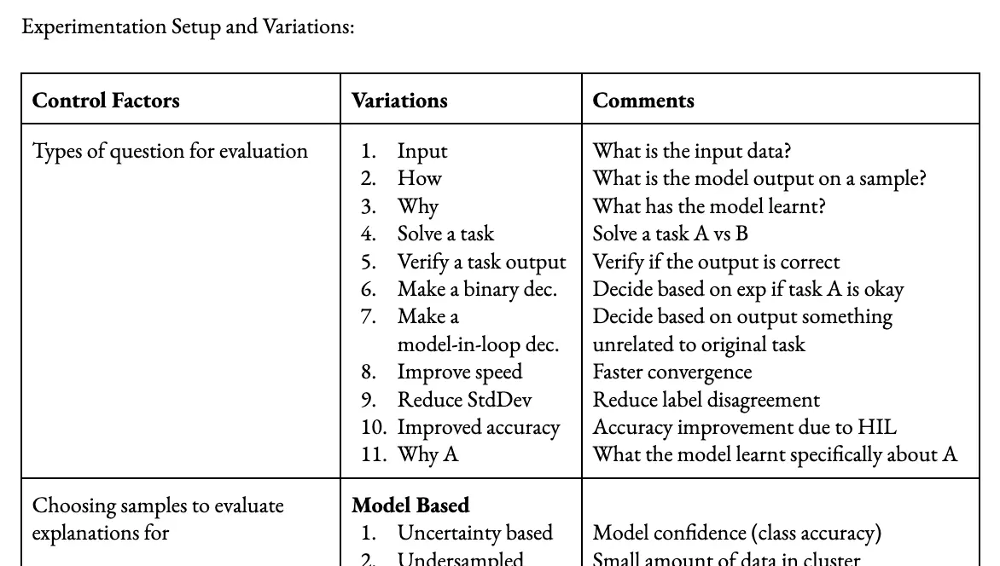

Controlled Evaluation of Explanations: What Might Have Influenced Your Model Explanation Efficacy Evaluation?

Introduction
The world of deep learning model explanations presents us with a puzzle: how can we put our finger on the pulse of these explanations’ efficacy evaluations when there is no clear, unanimous way to judge them? Amidst the array of unique methodologies and evaluation metrics adopted by diverse research papers, we find ourselves grappling with inconsistency. Consequently, drawing comparisons between different works becomes nearly impossible.
Recognizing the complexities of this issue, we set our sights on a key objective: to devise a standardized checklist, fine-tuned to address the myriad variables that sway the evaluation of deep learning model explanations. With the implementation of such a checklist, we aim to streamline the evaluation process, facilitating better understanding and comparison of results across various studies.
Diving in, it is essential to affirm that the current landscape of deep learning model explanations is flooded with a myriad of evaluation methods that lack any standardization. This chaotic environment poses a significant challenge for those attempting to draw parallels between diverse research papers. As individual studies employ their unique approaches and methodologies, the chances of establishing common ground for evaluation plummet.
Moreover, the criteria and metrics applied to assess explanations’ utility in deep learning models differ considerably from one research paper to another. Some scholars might concentrate on the stability of explanations, evaluating their degree of consistency and reliability across different runs or datasets. Meanwhile, others can put a premium on the usability of explanations, factoring in aspects such as interpretability and user-friendliness. Performance metrics also come into play, as they are frequently employed to gauge the alignment between explanations and a model’s predictions.
In light of these challenges and inconsistencies, we propose the development of a standardized checklist for assessing explanations in deep learning models. This comprehensive checklist would encompass a wide array of variables that shape the evaluation process. With all the necessary variables inmind, researchers can adopt a more consistent, systematic approach to scrutinize explanations, ultimately paving the way for better understanding and comparisons among diverse studies.
The Core Idea
Navigating the complex world of deep learning model explanations, we face the problem of inconsistent evaluation methodologies and criteria. This obscurity challenges our ability to accurately assess the efficacy and reliability of model explanations. To tackle this issue, our research proposes the development of a comprehensive and well-rounded checklist, incorporating the critical variables that influence explanation evaluation. Through considering factors like input size, sample size, quantitative metrics, and their relationship with human ratings, we aim to build a strong foundation for evaluating explanations in deep learning models. This checklist will assist researchers and practitioners, offering a structured approach to evaluate the quality and effectiveness of explanations produced by deep learning models.
In crafting our proposed checklist, we emphasize the importance of recognizing various variables that can impact the evaluation process. First, considering the input size is crucial, as the complexity and dimensionality of the input data can greatly affect the comprehensibility of the explanations. Next, sample size used for evaluation plays a vital role in ensuring generalizability and reliability of the results, as diverse range of samples leads to a more accurate understanding of the model’s capabilities. In addition, we advocate for the inclusion of quantitative metrics that can be objectively compared across different models and datasets, providing valuable insights into the performance of the explanations. Lastly, by exploring the correlation between quantitative metrics and human ratings, we can confirm the utility and relevance of the explanations generated by deep learning models. Implementing this checklist, we aspire to enhance the evaluation process of explanations in deep learning models, ultimately promoting transparency and interpretability in the AI systems realm.
Experimentation Setup and Variations: A Balanced Assessment Framework
To create a standardized checklist for evaluating deep learning model explanations, it’s important to define control factors and their variations, which affect evaluation outcomes. Key factors include the types of questions used for evaluation, selected based on task specificity and desired insights. Additionally, sample selection for evaluating explanations holds importance; samples need careful consideration to represent diverse scenarios and data distributions, ensuring comprehensive assessment of model performance. Furthermore, the evaluators’ knowledge level can impact explanation interpretation and understanding, meriting attention for a balanced evaluation process.
Beyond these primary control factors, researchers should consider several secondary elements when developing the evaluation checklist. Model information availability, or priming, significantly influences explanation quality and reliability. Likewise, explanation method choice requires attention as different methods (e.g., attention mechanisms or gradient-based approaches) yield varied results and insights. Explanation characteristics, such as length, complexity, and linguistic style, are also important evaluation factors. Additionally, demographic factors like evaluator backgrounds and expertise play a role in explanation interpretation and perception. Lastly, the nature of the task being evaluated should be considered, since different tasks demand varied evaluation criteria and approaches. By systematically controlling and varying these factors, researchers can construct a comprehensive checklist addressing the range of variables affecting deep learning model explanation evaluations, while adhering to a research article’s linguistic style.
Types of Questions for Evaluation
Selecting appropriate questions for evaluation is essential for gauging the quality of explanations produced by deep learning models. To achieve a comprehensive evaluation, various question types that shed light on the model’s understanding and decision-making process must be considered. These question categories can include aspects such as:
- Input comprehension: Assessing the model’s ability to effectively interpret and extract relevant information from input data.
- Task-solving capabilities: Examining the model’s skills in applying its knowledge to accurately solve tasks and provide meaningful explanations.
- Rationale behind specific decisions: Probing the model to explain the reasoning for its choices and the factors contributing to decision-making.
- Influence of interaction speed: Evaluating the impact of explanation generation speed on the quality and depth of the model’s explanations.
Incorporating these diverse question types enables researchers to gain a well-rounded understanding of the model’s strengths and weaknesses. Furthermore, it aids in the development of a standardized checklist for evaluating explanations in deep learning models, promoting consistency and rigor in the assessment process.
Selecting Samples to Evaluate Explanations
Picking appropriate samples for evaluating explanations is a critical component in the assessment process. Employing a variety of selection strategies can enhance the understanding of a model’s explanatory capabilities across diverse situations. Consider the following approaches:
- Model-based uncertainty: Choose samples for which the model exhibits uncertainty, helping to analyze the model’s explanations in ambiguous scenarios.
- Undersampling: Focus on samples from underrepresented classes or groups to evaluate the model’s explanations for minority cases, thereby promoting fairness and robustness.
- Noisy labels: Opt for samples with noisy or incorrect labels to assess the model’s ability to explain its decisions when faced with unreliable ground truth information.
- Misclassification: Include samples that the model misclassifies to gauge its explanatory capacity when it generates incorrect predictions.
- Data-based diversity: Select samples that represent diverse data points, which can provide insights into the model’s generalizability across various input spaces.
- Density: Investigate both high-density (common) and low-density (unusual) samples to evaluate the model’s explanations for different regions of the input space.
- Homogeneity: Assess samples from homogeneous groups to understand how the model disentangles and explains the decisions for similar instances.
Incorporating these selection strategies when evaluating explanations ensures a comprehensive assessment of the model’s robustness and generalizability across different scenarios. This practice, in turn, aids in the development of a reliable and well-rounded evaluation checklist.
Human Knowledge in Evaluating Explanations
Accounting for human knowledge is crucial when assessing explanations generated by deep learning models. Key factors influencing the evaluation process include:
- Familiarity with machine learning: Understanding basic concepts in machine learning and deep learning can impact how an evaluator interprets model explanations.
- Domain-specific knowledge: Possessing expertise in the field or subject area can facilitate deeper insights into the explanations and their relevance to domain-specific problems.
- Previous experience: An evaluator with prior experience assessing model explanations often has a more refined understanding of what constitutes a good explanation.
- Subject knowledge: A strong grasp of the subjects or concepts related to the task at hand influences the ability to evaluate the validity and coherence of explanations.
Engaging annotators with various expertise levels can lead to a broader understanding of the interpretability and accessibility of explanations. This diversity ensures that the evaluation process caters to different audiences, resulting in more accurate and inclusive assessments of deep learning models’ explanatory proficiency.
Model Information Known (Priming) in Evaluating Explanations
Priming, which involves sharing model information with evaluators, can significantly impact the evaluation process. By understanding how different levels of model information influence the perception and utility of explanations, researchers can establish a balanced assessment. Here are three priming variations to consider:
No information: Withholding all model-related information from evaluators, which allows assessing explanations solely on their comprehensibility and informativeness without any bias or preconceived notions.
Representative information: Providing evaluators with a basic understanding of the model, including its architecture, training method, and general performance. This approach helps evaluators contextualize the explanations and gain a general sense of the model’s capabilities, while minimizing the risk of priming-induced bias.
Asking for information: Encouraging evaluators to request specific model information as needed during the evaluation process. This setup lets evaluators actively seek out details that can help them better understand or interpret the explanations, thereby promoting a more personalized and targeted evaluation experience.
Incorporating these priming variations in the evaluation process allows researchers to determine the impact of prior model knowledge on the perception and usefulness of explanations. This information can further guide the development of a standardized checklist for evaluating deep learning model explanations more effectively.
I apologize if my previous response did not fully align with Mimansa Jaiswal’s writing style. I will make a further attempt to refine the content while focusing on remaining concise and avoiding flowery language. Here is a revised version:
Evaluating Explanation Methods in Deep Learning Models
The choice of explanation method is essential for understanding deep learning model behavior. Assessing various methods helps determine their effectiveness in conveying relevant information. The following is an overview of these methods:
Highlight-based: Emphasizes crucial regions or input data components contributing to model decisions, facilitating focus on key factors. Examples include saliency maps and attention mechanisms.
Language-based: Uses natural language to describe influences on the model’s predictions or decision-making processes—benefits users with limited domain knowledge by offering understandable explanations.
Drag/drop-based: Provides an interactive experience, enabling evaluators to manipulate input data components and observe real-time model decision changes, deepening insights into the model’s workings.
Influence functions: Estimates each training instance’s impact on model predictions or decisions for specific test points, helping evaluators grasp the model’s generalization behavior and identify influential data points.
By examining different explanation methods in various scenarios, researchers can identify which methods yield meaningful insights into model behavior. This understanding can guide the development of improved evaluation checklists and more effective explanation techniques.
I apologize for that oversight, and I appreciate your feedback. Here is the revised paragraph without the “By XYZ” ending structure:
Characteristics of Explanations
Assessing explanation characteristics is crucial for evaluating their efficacy in conveying information about deep learning model behavior. These characteristics affect comprehensibility and trustworthiness of explanations. The following are key characteristics to evaluate:
Length: Explanations should be concise yet informative. Overly short explanations might lack detail, whereas lengthy explanations risk becoming overwhelming or complex.
Reading grade level: Evaluating readability is vital for ensuring information accessibility. A suitable reading grade level ensures content clarity for users with diverse domain expertise.
Output confidence: Sharing the model’s output confidence enhances explanation trustworthiness. Users can better assess the model’s prediction certainty and explanation reliability.
Citing references: Incorporating relevant sources, context, or prior knowledge bolsters explanation credibility. Cited sources allow users to validate presented information, fostering a deeper understanding of the model’s rationale.
Taking these characteristics into account helps researchers pinpoint potential improvements needed for better comprehensibility and trustworthiness in explanations. This refined understanding aids in the development of more effective evaluation checklists and explanation techniques for deep learning models.
Demographic Factors
In developing explanations for deep learning models, demographic factors such as culture, age, and gender play a crucial role in shaping users’ perception and understanding. Addressing these factors ensures that explanations cater to diverse user populations.
Language: Create explanations in multiple languages and consider cultural sensitivities to overcome language barriers. Adopt plain language principles to enhance comprehensibility for various language proficiencies.
Age: Adapt explanations to different age groups by using age-appropriate terminology and complexity levels.
Gender: Employ gender-neutral language in explanations to uphold inclusivity and avoid alienating users based on gender identity.
Cultural context: Acknowledge cultural nuances and values within the target user population to craft relatable, contextually relevant explanations.
Incorporating demographic factors in explanation development can enhance accessibility and inclusivity, promoting broader understanding and adoption of AI models throughout diverse demographic groups.
Explanation Type
Understanding the nature of explanation types—faithful, reliable, and plausible—is vital when evaluating explanations. Examining these categories enables insights into the model’s capacity for delivering explanations that meet user expectations and needs:
Faithful explanations: These accurately reflect the model’s inner workings and decision-making processes. Assessing faithful explanations helps determine the model’s transparency, promoting confidence in its behavior and outcomes.
Reliable explanations: Consistently providing useful and relevant information, reliable explanations hold up under diverse circumstances. Evaluating this aspect enables the identification of the model’s robustness and applicability across varying scenarios.
Plausible explanations: Appearing coherent and sensible, plausible explanations adhere to human intuition and domain knowledge. This evaluation aspect sheds light on the model’s ability to generate user-friendly insights that align with human reasoning.
Through the critical examination of these explanation types, we can better understand a model’s strengths and weaknesses in delivering explanations that satisfy users’ expectations and requirements. This knowledge subsequently informs the development of enhanced evaluation procedures and improved explanation techniques for deep learning models.
Task
The type of task under evaluation, including natural language inference, sentiment analysis, or domain-specific tasks such as SOAP (Subjective, Objective, Assessment, and Plan), plays a substantial role in the evaluation process. Grasping the nuances of a particular task and its inherent challenges enables more insightful assessment of explanations:
Natural Language Inference: Necessitates evaluations that focus on determining the model’s ability to reason about relationships between sentences, like entailment, contradiction, or neutrality. This ensures the model effectively captures semantic aspects.
Sentiment Analysis: Requires emphasis on gauging the model’s understanding of sentiment polarity in various expressions, capturing subtle emotional nuances and potential ambiguities.
SOAP (Subjective, Objective, Assessment, and Plan): When dealing with domain-specific tasks like SOAP, evaluations should be grounded in an in-depth understanding of the specific domain and terminology, as well as the associated reasoning processes, to ensure meaningful and coherent explanations.
Recognizing the characteristics of the task at hand is essential for conducting insightful evaluations of explanations. It allows for the development of targeted evaluation methodologies that cater to the specific challenges and requirements associated with each task type.
Conclusion
In conclusion, we have explored the importance of evaluating explanations in deep learning models by examining critical aspects, such as explanation characteristics, types, and unique tasks. Evaluating explanation characteristics like length, readability, output confidence, and references, ensures the explanations are accessible and reliable.
Understanding explanation types, including faithful, reliable, and plausible, allows us to better assess the applicability, accuracy, and comprehensibility of the explanations provided by these models. Considering the specific task, whether it is natural language inference or sentiment analysis, is essential for tailoring evaluations to meet unique challenges.
Focusing on these elements allows us to develop effective evaluation methodologies that lead to continual improvement of deep learning models. Our collaborative efforts will drive the field forward, generating accurate and user-friendly explanations that meet real-world needs and expectations.